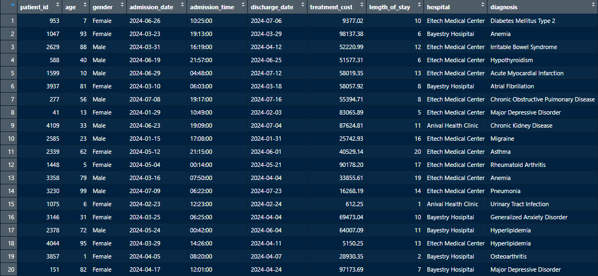
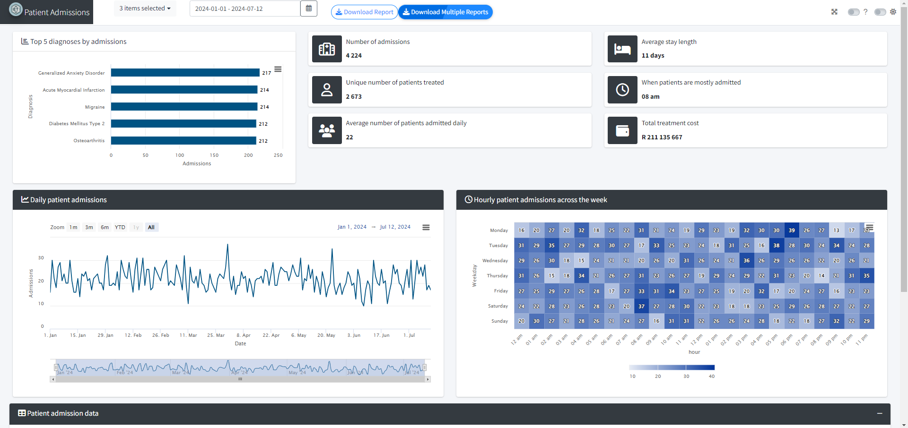
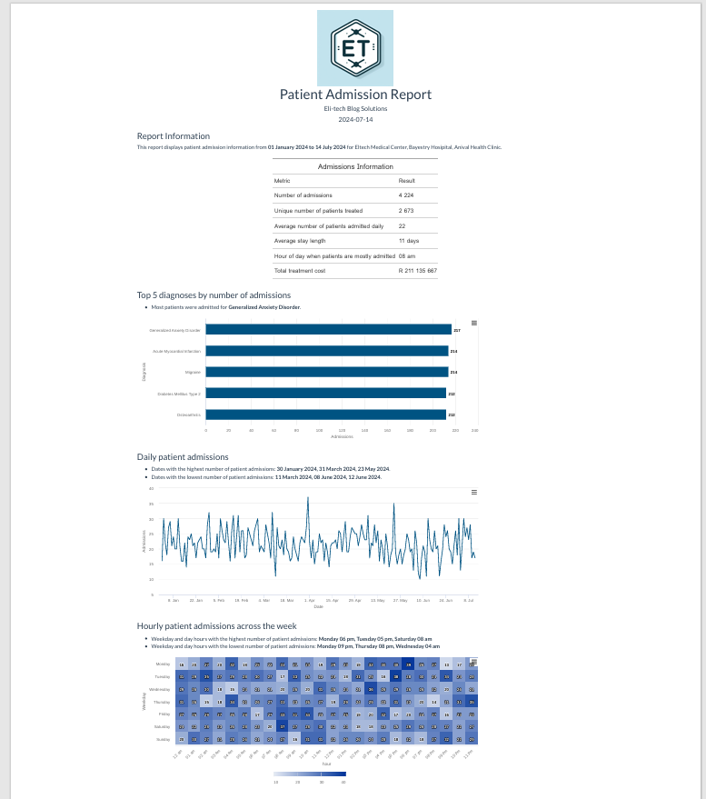

In this blog post, we will explore how to create patient admission data in R and Python. Such data can be useful for simulations, practice data analysis exercises and projects, or even for developing machine learning models.
Data creation brainstorming
Before creating this dataset, I researched how patient data is generally structured and considered the types of analyses or projects I would like to conduct. This helped inform the variables needed. I was particularly interested in common diagnoses leading to patient admissions, so I researched and selected 20 diagnoses to include in the dataset. To compile this list, I Googled common patient diagnoses and used ChatGPT to generate additional suggestions.
I also outlined some assumptions about patient admissions, such as the likelihood of patients being admitted to the same hospital multiple times for various or even the same diagnoses. This influenced the number of observations (admissions) and the number of unique patients in the dataset. Incorporating statistical concepts can further enhance the realism of the data. Although the data points are randomly generated and may not always make perfect sense (e.g., some diagnoses or prices assigned might seem odd), this dataset serves as practice data for analytical purposes.
Data variables to create
Patient IDs:Randomly assigned to simulate multiple visits by some patients.Patient Ages:Randomly chosen between 1 and 100 years.Patient Genders:Randomly assigned as Male or Female.Admission Dates:Random dates between January 1, 2022, and July 12, 2024.Length of Stay:Randomly chosen between 1 and 20 days.Discharge Dates:Calculated as admission date plus length of stay.Admission Times:Random times throughout the day.Treatment Costs:Random costs between 500 and 100,000.Hospitals:Three hospital names with varying probabilities for patient assignment.Diagnoses:20 common diagnoses plus Covid-19.
Story behind the hospital names
The hospital names were creatively derived by combining my hobbies and interests:
- Eltech Medical Center: A combination of “Eli” and “tech,” inspired by the name of my blog.
- Bayestry Hospital: A blend of “Bayesian” and “try,” reflecting a statistical technique I commonly use in my research.
- Anival Health Clinic: Merging “Anime” and “val,” as I am a major anime fan and wanted to include this interest.
These hospital names are fictional, but if any happen to resemble real ones, it’s a complete coincidence.
Creating patient data in R and Python
The following R libraries were used along with base R functions to create patient admission data:
# Load necessary libraries
library(dplyr)
library(lubridate)
# Set seed for reproducibility
set.seed(123)
# Number of patients and visits
num_patients <- 4300
num_visits <- 20000
# Generate Patient IDs (some patients will have multiple visits)
patient_ids <- sample(1:num_patients, num_visits, replace = TRUE)
# Generate Patient Ages
patient_ages <- sample(1:100, num_visits, replace = TRUE)
# Generate Patient Genders
patient_genders <- sample(c('Male', 'Female'),
num_visits, replace = TRUE)
# Generate Admission Dates
admission_dates <- sample(seq.Date(from = as.Date("2022-01-01"),
to = as.Date("2024-07-12"), by = "day"),
num_visits, replace = TRUE)
# Generate Length of Stay (in days)
length_of_stay <- sample(1:20, num_visits, replace = TRUE)
# Generate Discharge Dates
discharge_dates <- admission_dates + days(length_of_stay)
# Generate Admission Times
admission_times <- format(strptime(sprintf("%02d:%02d",
sample(0:23, num_visits, replace = TRUE),
sample(0:59, num_visits, replace = TRUE)),
format="%H:%M"), "%H:%M")
# Generate Treatment Costs
treatment_costs <- round(runif(num_visits, min = 500, max = 100000), 2)
# Generate Hospital Names
hospitals <- sample(c('Eltech Medical Center',
'Bayestry Hosipital',
'Anival Health Clinic'),
num_visits, replace = TRUE,
prob = c(0.6, 0.3, 0.1))
# Generate Diagnoses - Admission is assumed for all these diagnoses
diagnoses <- sample(c('Hypertension', 'Diabetes Mellitus Type 2',
'Chronic Obstructive Pulmonary Disease', 'Acute Myocardial Infarction',
'Asthma', 'Gastroesophageal Reflux Disease',
'Major Depressive Disorder', 'Generalized Anxiety Disorder',
'Osteoarthritis', 'Rheumatoid Arthritis',
'Hypothyroidism', 'Chronic Kidney Disease',
'Hyperlipidemia', 'Urinary Tract Infection',
'Migraine', 'Pneumonia',
'Psoriasis', 'Irritable Bowel Syndrome',
'Atrial Fibrillation', 'Anemia', 'Covid-19'),
num_visits, replace = TRUE)
# Create the data frame
patient_data <- data.frame(
patient_id = patient_ids,
age = patient_ages,
gender = patient_genders,
admission_date = admission_dates,
admission_time = admission_times,
discharge_date = discharge_dates,
treatment_cost = treatment_costs,
length_of_stay = length_of_stay,
hospital = hospitals,
diagnosis = diagnoses
)
# Ensure discharge dates are not before admission dates
patient_data <- patient_data |>
mutate(discharge_date = if_else(discharge_date < admission_date,
admission_date, discharge_date))
# Save to CSV
write.csv(patient_data, "patient_data.csv", row.names = FALSE)The following Python libraries were used along with built-in Python functions to create patient admission data:
- numpy: For generating random data.
- pandas: For handling data frames.
- datetime: For handling dates and times.
# Import libraries
import pandas as pd
import numpy as np
from datetime import datetime, timedelta
# Set seed for reproducibility
np.random.seed(123)
# Number of patients and visits
num_patients = 4300
num_visits = 20000
# Generate Patient IDs (some patients will have multiple visits)
patient_ids = np.random.choice(range(1, num_patients + 1), num_visits, replace=True)
# Generate Patient Ages
patient_ages = np.random.choice(range(1, 101), num_visits, replace=True)
# Generate Patient Genders
patient_genders = np.random.choice(['Male', 'Female'], num_visits, replace=True)
# Generate Admission Dates
start_date = datetime.strptime("2022-01-01", "%Y-%m-%d")
end_date = datetime.strptime("2024-07-12", "%Y-%m-%d")
admission_dates = np.random.choice(pd.date_range(start_date, end_date),
num_visits, replace=True)
admission_dates = pd.to_datetime(admission_dates).to_pydatetime()
# Generate Length of Stay (in days)
length_of_stay = np.random.choice(range(1, 21), num_visits, replace=True)
# Generate Discharge Dates
discharge_dates = [admission_dates[i] + timedelta(days=int(length_of_stay[i])) for i in range(num_visits)]
# Generate Admission Times
hours = np.random.choice(range(24), num_visits, replace=True)
minutes = np.random.choice(range(60), num_visits, replace=True)
admission_times = [f"{hour:02d}:{minute:02d}" for hour, minute in zip(hours, minutes)]
# Generate Treatment Costs
treatment_costs = np.round(np.random.uniform(500, 100000, num_visits), 2)
# Generate Hospital Names
hospitals = np.random.choice(['Eltech Medical Center',
'Bayestry Hospital',
'Anival Health Clinic'],
num_visits, replace=True, p=[0.6, 0.3, 0.1])
# Generate Diagnoses
diagnoses = np.random.choice(['Hypertension', 'Diabetes Mellitus Type 2',
'Chronic Obstructive Pulmonary Disease', 'Acute Myocardial Infarction',
'Asthma', 'Gastroesophageal Reflux Disease',
'Major Depressive Disorder', 'Generalized Anxiety Disorder',
'Osteoarthritis', 'Rheumatoid Arthritis',
'Hypothyroidism', 'Chronic Kidney Disease',
'Hyperlipidemia', 'Urinary Tract Infection',
'Migraine', 'Pneumonia',
'Psoriasis', 'Irritable Bowel Syndrome',
'Atrial Fibrillation', 'Anemia', 'Covid-19'],
num_visits, replace=True)
# Create the DataFrame
patient_data = pd.DataFrame({
'patient_id': patient_ids,
'age': patient_ages,
'gender': patient_genders,
'admission_date': admission_dates,
'admission_time': admission_times,
'discharge_date': discharge_dates,
'treatment_cost': treatment_costs,
'length_of_stay': length_of_stay,
'hospital': hospitals,
'diagnosis': diagnoses
})
# Ensure discharge dates are not before admission dates
patient_data['discharge_date'] = np.where(patient_data['discharge_date'] < patient_data['admission_date'],
patient_data['admission_date'], patient_data['discharge_date'])
# Save to CSV
patient_data.to_csv("patient_data_python.csv", index=False)Patient admission data sample
The patient admission data can be downloaded on GitHub. This is how the synthetic patient admission data looks:

Patient admission dashboard and report
The patient data was used to create an analytic dashboard and report that provide insights on the following:
- Top 5 diagnoses by admissions
- Number of admissions
- Unique number of patients treated
- Average number of patients admitted daily
- Average stay length
- Hour of the day when patients are mostly admitted
- Total treatment cost
- Daily patient admissions
- Hourly patient admissions during the week
The dashboard is programmed in R using the Shiny and bs4Dash libraries.

The report is generated based on the hospital and admission date filters from the dashboard. It is an R Markdown report in HTML format.

The code for patient data, dashboard, and report generation can be accessed on GitHub
How patient admission data can transform hospitals
Patient admission data can be a goldmine for hospitals looking to improve efficiency and patient care. Some ways in which the data can be used:
Resource allocation: By understanding things like the most common diagnoses, admission rates, and peak admission times, hospitals can allocate staff, beds, and equipment more effectively. Imagine knowing Tuesdays at 10 am are busiest for admissions, so you have extra staff scheduled then.
Patient care: Knowing how long patients typically stay helps hospitals plan discharges and avoid overcrowding. Additionally, tracking readmission rates can help identify areas where care can be improved.
Insights at a glance: Dashboards and reports that summarize this data allow staff to quickly see trends and patterns. This can help with things like staffing decisions, budgeting, and identifying areas for improvement in patient care.
Your friendly neighborhood data scientist